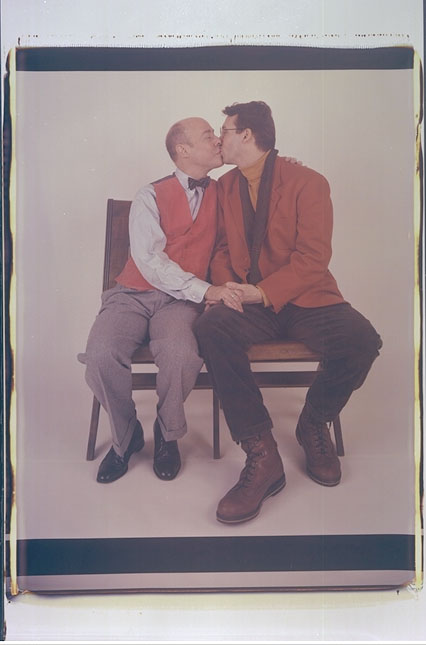

STAR 90
It was inevitable that Bruce Cratsley and I would get together. His brother John was our connection. In the fall of 1972 John bought a portrait of WH Auden for "his brother who's a photographer, too" from my shopping cart in Harvard Square. $2.50. Rummaging through the wagon John also found a portrait of an old law school buddy, sitting bare chested at my kitchen table. It was Harvey Silverglate, my then boyfriend, now husband. Another SALE. Another $2.50.
Renewed friendship with John and Holly. And finally, Bruce in Cambridge in the flesh. We clicked. In 1975 he even joined me on the Cambridge sidewalk, hawking prints. The price now $10.00. Much talk. Indian food. Japanese food. Leftovers. Piles of photographs. That's Bruce and me. We talk about our work, our stratgegies, our printing, our "progress," our connections, our love life. We trade prints. We gossip about the grants we did and didn't get. What so and so REALLY meant. We egg eachother on to shoot more, connect more, print more, work harder. We're long distance friends. The phone. No email. No fax. He's star 90 from every phone in my house and in my studio.
Health. In the last couple of years it's been there right at the top of our conversation. Occassionally lurking. So, how are you??? A couple of times I've thought oh boy, this is IT, but the tenacity, the pull of his WORK gets Bruce through the tough nights. He sounds AWFUL, but tells me he is going to an opening, going out to dinner with Billy, making prints of Venice, Paris. HOW???
Of course I remember the old days. Bruce's long poetic messages to his friends on his anwering machine, his latest impeccable acquisition to his vast and georgeous wardrobe, his thrill at clinching sales at Marlboro. And especially, his dogs Ms Muffitt and Sheldon, and later,Honey, coming to life when they sensed Bruce was reaching for the leash. The promise of a long walk in the neighborhood with Bruce and his inevitable camera.
Bruce's apartment. A magical space of 900 sq.ft. packed floor to ceiling with books, framed prints, grey arachive boxes, tie racks, vests (that wardrobe), dried flowers, fresh flowers, ceramics, soft chairs and couches, mirrors. Every table top, every shelf a still life. Who dusts all this I always ask him, thinking of our friend Lee Witkin, who would come home to HIS totally filled apartment and dust his collection EVERY night.
Maybe Bruce's work gets its intimacy from its origins: shot on streets Bruce loves, in museums Bruce loves, in markets, inside spaces. Printed in the apartment, the trays at the foot of the love bed, Ralph Lauren sheets and pillows in view, washed in the cramped bathroom, bathrobes, shirts hanging, art on the walls near the shower curtain. Of course. From the comfort of the apartment and the constant phone calls from friends (never a phone call with Bruce uninterrupted) Bruce is able to work his ass off no matter how he feels.
Bruce's friends. Bruce has a genius for friendship. So many people want to be with him, help him, go to photo shows with him, the movies, the shore, the flea markets. Share the conversation. He has a special gift for zoning in on women, he likes US and has a sense of what we're about. And he has a talent for LOVE, finding it and nourishing it.
The Yankee Scottish whatever grit that keeps Bruce going is the ultimate
act of generosity. By getting those pictures printed and getting them out,
he is letting us SEE the pieces of our shared world the way they seem to
him.
Witkin Gallery, 1987.
Sitting in Bruce Cratsley's apartment in a velvet upholstered chair beside his round table with luxuriant potted plants, mirrors, photographs, paintings, in his world, with a stack of matted prints, his work, on my lap is heaven. The apartment, two rooms, seven hundred square feet, with the enlarger and developing trays in the bedroom at the foot of the bed over his dresser, is layered with things to look at. Take an invenntory and you rob Bruce's soul. It's all there. Placed in a context measured in inches. Even after dozens of visits I find new things. (New things join the crowd so to speak, all the time and Bruce hardly ever tosses anything out.) This marvel of a place is the training ground of Bruce's eye. It's his locale ideale that he goes out into the world and tries to find/make/remake on film with his camera. Ms Mutfit is on the couch where I sleep, the privileged houseguest, or she is smelling my dog, Moozer, and rubbing against me. Sometimes, in a gesture of trust and generosity, she rests on top of my sneakers.Bruce always has piles of new prints to show me. Glimpses of New York, portraits of his friends' babies, shop windows he has found on his walks in the neighborhoods. Bruce doesn't get under the skin of the street, he stays with the surfaces, lingers over statues and decorated masonry. He has an eye that rests on the ordinary. It isn't probing or superior to what it rests upon. It just goes to its own material in a familiar way, as if "Bad Boy" were waiting in the window ( for him to walk by) forever. How does he find his graffiti? Magical words scribbled by others who don't know he exists and will be walking by to savor/save their work. He even found "bruce" on East Seventeenth Street. He goes out all alone with his camera, or Ms. Mutfit or earlier dear Sheldon, goes with him. The work has the feeling of a stroll. Of a man not in a hurry but with a job to do. Or a calling. Photography is Bruce's calling. It's his whole day (and night, the only time he can print in his bedroom) and gives his day (read life) its shape, besides Ms. Mutfit, who gives him a schedule, though I must say she can go an inordinately long time between walks.
Bruce is a master of the ten second bit. For a long time he was into making elaborate messages on his answering machine for his friends. They were short gifts to those of us who were looking for him. Sometimes a little Mahler. Name that poem. Lines from Dylan Thomas. His pictures too are bits, in this case, the ten-second glance that takes it all in. Connected not by a philosophy or a hammered out sociological or aesthetical point of view, but connected because Bruce made them all. Why is Bruce's work signed by D.B. Cratsley? (Is it an homage to literature?) That's Bruce's only secret. Everything else is simple and open and in his work.
Find Elsa's Books


Please change your links and bookmarks to elsadorfman.com!
Elsa thanks her cybergodmother, photo.net, her longtime, most generous host at furfly.com, and her current web host Mike Sisk at TCP/IP Ranch, LLC.
Copyright 1970-2010 © Elsa Dorfman.
Inquiries for the use of Elsa's content are welcomed!
Please
read these guidelines.
Contact
Elsa Dorfman via email or send Website Feedback to her webmaster.